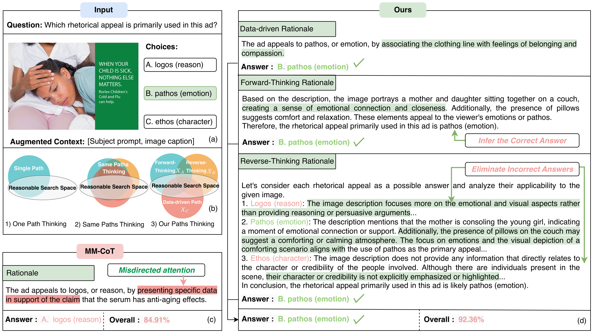
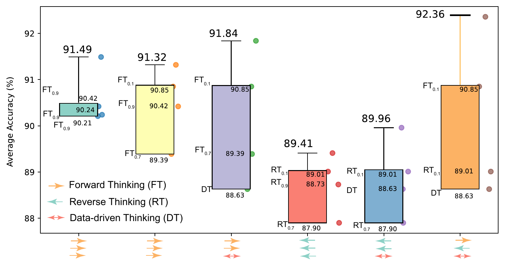

Existing multimodal reasoning approaches typically address tasks using enhanced large language models (LLMs) with multi-step reasoning (e.g. Chain-of-Thought, CoT) along a single reasoning path, which either relies on labor-intensive annotations or remains vulnerable to data bias and hallucination.
We propose Insights Fusion CoT (IFCoT), a multimodal reasoning framework that fuses insights from three distinct yet complementary thinking paths: the forward path, the reverse path, and the data-driven path. The forward and reverse paths generate multi-step rationales with LLMs, inspired by human reasoning strategies in cognitive psychology — forward directly infers the answer from question descriptions, while reverse derives it by indirectly eliminating wrong answers. The data-driven path is supervised with annotated rationales and provides experience-grounded predictions.
Unlike naïve multi-path self-consistency that samples multiple CoTs from a single prompting pattern, IFCoT deliberately constructs heterogeneous reasoning paths with distinct inductive biases and justifies their fusion under an information-theoretic objective: maximize the joint Beneficial Information while penalizing inter-path redundancy. Extensive experiments on ScienceQA and medical VQA benchmarks show that IFCoT substantially outperforms prior state-of-the-art CoT methods and surpasses human-level performance reported on ScienceQA.
An LLM produces a direct, step-by-step rationale that infers the answer from the question and visual context — a knowledge-driven chain that mirrors human deductive reasoning.
The same LLM is prompted to eliminate wrong options one by one, inspired by indirect proof in mathematics. RT exposes a different failure surface than FT, providing complementary evidence.
A fine-tuned T5-based model produces a rationale grounded in annotated training data, offering precise, experience-like signals that LLMs alone cannot access.

Figure 2. IFCoT pipeline. The three rationales are generated independently from heterogeneous prompting templates / a fine-tuned model, and then aggregated via self-consistency. The three paths are explicitly designed to have low inter-path mutual information, satisfying the information-theoretic objective derived in Section III-A.
Figure 3. A schematic comparison of reasoning paradigms. (a) Vanilla VQA. (b) MM-CoT generates a single rationale, then derives the answer. (c) DDCoT decomposes the question into sub-questions. (d) IFCoT aggregates three distinct modes of thinking — Forward, Reverse, and Data-driven — into a single, more reliable prediction.
Accuracy (%) on ScienceQA across five question classes. Bold = best, underline = second best. IFCoT with Gemini Pro achieves 92.36 average, exceeding human performance (88.40) and the strongest LLM baseline ToolFiVe (87.74) by 4.62 points.
| Method | Size | NAT | SOC | LAN | G1–6 | G7–12 | Avg |
|---|---|---|---|---|---|---|---|
| Human [Lu et al.] | — | 90.23 | 84.97 | 87.48 | 91.59 | 82.42 | 88.40 |
| GPT-3.5 w/ CoT | 175B | 75.44 | 70.87 | 78.09 | 78.23 | 69.68 | 75.17 |
| Gemini Pro | — | 75.98 | 82.11 | 79.27 | 81.75 | 71.59 | 78.12 |
| Chameleon (GPT-4) | — | 89.83 | 74.13 | 89.82 | 88.03 | 83.72 | 86.54 |
| ToolFiVe (GPT-3.5-Turbo) | — | 90.05 | 77.95 | 90.91 | 89.62 | 84.44 | 87.74 |
| ChatGPT IR-CoT-Retrieval | — | 86.16 | 86.89 | 88.32 | 87.87 | 85.07 | 87.37 |
| MM-CoT | 223M | 87.52 | 77.17 | 85.82 | 84.65 | 85.37 | 84.91 |
| DDCoT | 223M | 88.72 | 86.84 | 84.91 | 88.58 | 85.10 | 87.34 |
| IFCoTChatGPT (Ours) | 223M | 89.83 | 94.60 | 89.82 | 91.92 | 88.86 | 90.83 |
| IFCoTGemini Pro (Ours) | 223M | 91.70 | 96.06 | 90.73 | 92.77 | 91.63 | 92.36 |
With only 223M trainable parameters, IFCoT outperforms LLaVA-Med (7B fine-tuned) on both medical datasets.
| Method | Type | Size | VQA-RAD | SLAKE-EN |
|---|---|---|---|---|
| LLaVA | Zero-shot | 7B | 59.19 | 50.24 |
| Gemini Pro | Zero-shot | — | 66.54 | 69.71 |
| LLaVA | Fine-tuning | 7B | 65.07 | 63.22 |
| LLaVA-Med (Vicuna) | Fine-tuning | 7B | 81.98 | 83.17 |
| MM-CoT | Fine-tuning | 223M | 76.84 | 79.09 |
| IFCoT (Ours) | Fine-tuning | 223M | 81.99 (+5.15) | 84.38 (+5.29) |

Figure 4. Self-consistency across three reasoning paths. Each box spans the per-path accuracies; the orange line marks the gain delivered by the IFCoT trio over the strongest single-prompt baseline. Heterogeneous paths consistently outperform homogeneous repetition.
Let XA, XB, XC denote the outputs from the forward, reverse, and data-driven paths, and let Y be the ground-truth answer. Define Beneficial Information as 𝓑(S) = I(S; Y) for any subset S. IFCoT optimizes:
The first term rewards each path for being individually informative about Y; the two mutual-information terms penalize inter-path redundancy. Under the Chain Rule (Propositions 3.2 & 3.3 in the paper), this objective is tight only when the three paths are heterogeneous — which is why IFCoT's forward / reverse / data-driven design outperforms three samples from a single prompting template.
@article{liu2026ifcot,
title = {IFCoT: Insights Fusion Chain of Thought for
Multimodal Reasoning in LLMs},
author = {Liu, Jiaxiang and Du, Jiawei and Hu, Tianxiang and
Tong, Linjie and Feng, Yang and Zhou, Joey Tianyi and
Xu, Mingkun and Liu, Zuozhu},
journal = {IEEE Transactions on Circuits and Systems
for Video Technology},
year = {2026},
url = {https://ieeexplore.ieee.org/abstract/document/11557378}
}